Piękno Ukryte w Drewnie
Tradycyjna rzeźba sakralna wykonywana ręcznie z poszanowaniem stuletnich technik rzemieślniczych. Ołtarze, figury i płaskorzeźby z duszą.
Zobacz moje praceJan Chmielek
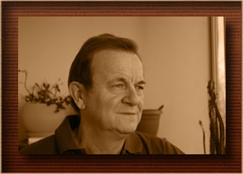
Zajmuję się projektowaniem i realizacją rzeźb sakralnych z naturalnego drewna. Każde z moich dzieł jest unikalne, tworzone z dbałością o najmniejszy detal i poszanowaniem teologicznego przekazu.
Moje dłuta kształtują szlachetne gatunki drewna – dąb, lipę i orzech, nadając im formy, które służą kontemplacji i modlitwie w kościołach oraz domach na całym świecie.
Urodziłem się w 1945 r. w Krakowie. W 1965 r. ukończyłem Państwowe Liceum Technik Plastycznych im. A. Kenara w Zakopanem - kierunek rzeźba. Moimi nauczycielami byli m.in. Władysław Hasior, Antoni Rząsa, Tadeusz Brzozowski, Arkadiusz Waloch. Studiowałem w Wyższej Szkole Pedagogicznej w Krakowie oraz ukończyłem studia podyplomowe wAkademii Pedagogicznej w Krakowie. Przez 39 lat byłem nauczycielem w XII Liceum Ogólnokształcącym w Krakowie. Fascynuję się fotografią, którą traktuję jako dokumentację i inspirację twórczą. Prezentowałem swe prace na wystawach zbiorowych i indywidualnych. Ostatnio prezentowałem swe prace na następujących wystawach:
Wystawy zbiorowe:
- 2002 - Zakopane, BWA
- 2008 - Zakopane, BWA
- 2016 - Zakopane, BWA
Wystawy indywidualne:
- 2008 - Kościół Św. Jadwigi Królowej
Kraków–Krowodrza - 2008 - Kościół Opatrzności Bożej
Kraków–Swoszowice - 2009 - Centrum Jana Pawła II
Kraków, ul. Kanonicza - 2010 - Kościół Św. Jadwigi Królowej
Kraków-Kliny - 2010 - Kościół Św. Jadwigi Królowej
Kraków-Krowodrza - 2010 - Kościół Św. Kazimierza
Zakopane–Kościelisko - 2011 - Kościół Matki Bożej Saletyńskiej
Kraków - 2012 - Nowohuckie Centrum Kultury
Kraków - 2013 - Kościół Opatrzności Bożej
Kraków-Swoszowice - 2014 - Kościół Św. Jadwigi Królowej
Kraków-Krowodrza - 2016 - Kościół Zwiastowania Pańskiego
Żarnowiec, woj. pomorskie - 2016 - Muzeum Regionalne i Zamek
Krokowa, woj. pomorskie - 2017 - XII L.O. im. C. K. Norwida
Kraków - 2019 - Nowohuckie Centrum Kultury
Kraków
Moje prace znajdują się:
- w kościele Św. Jadwigi Królowej w Krakowie,
- w kościele Św. Floriana w Krakowie,
- w kościele Św. Kazimierza w Zakopanem-Kościelisku,
- w kościele Św. Trójcy w Łopusznej,
- w zbiorach prywatnych w Niemczech (Trewir), USA i Australii.
Galeria
{kind=link}
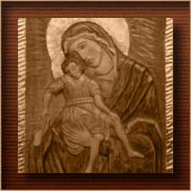
{kind=link}
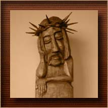
{kind=link}
{kind=link}
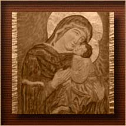
{kind=link}
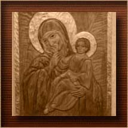
{kind=link}
{kind=link}
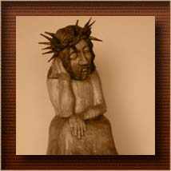
{kind=link}
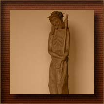
{kind=link}
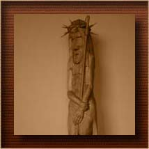
{kind=link}
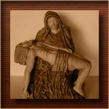
{kind=link}
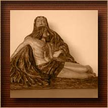
{kind=link}
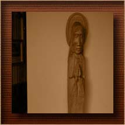
{kind=link}
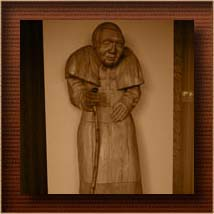
{kind=link}
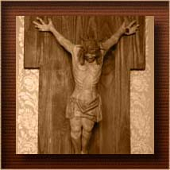
{kind=link}
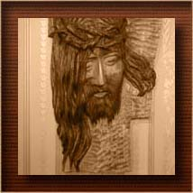
Wystawy
Skontaktuj się ze mną
Dane kontaktowe
Telefon: +48 603 605 161
Email: mielek@interia.pl
Zapraszam do kontaktu w celu zakupu rzeźb, omówienia indywidualnych projektów oraz zamówień dla parafii i osób prywatnych.